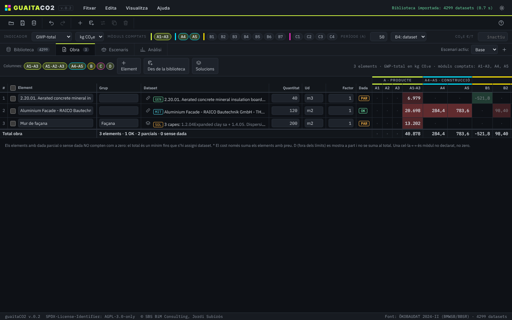

Què fa
Decidir amb el carboni a la vista
Mòduls A1–D
Resultats per fase (A1-A3, A4, A5, B1-B7, C1-C4) i D a part, amb el «·» de dada no declarada ben diferenciat del zero.
Alternatives i escenaris
Substitueix materials, compara escenaris amb cascada, Δ CO₂e i Δ cost, i troba els punts calents.
Solucions per capes
Murs, forjats i cobertes com a capes per m², amb vida útil i B4 calculat o del dataset.
Casos didàctics
Enunciat, objectiu de reducció i límit de cost per al mode alumne; informe imprimible.
Referències per m²
Contrast amb valors LETI i RIBA amb la font citada.
100 % local
Un sol fitxer HTML. Dades al navegador (IndexedDB), sense servidor ni seguiment.
Captures
L'app



Com començar
Tres passos
- Descarrega el CSV d'ÖKOBAUDAT (gratuït) i obre l'app.
- Importa el CSV: es llegeix al teu ordinador i es desa al navegador.
- Afegeix elements, compara alternatives i escenaris, i imprimeix l'informe.
Legal
Llicència, dades i avís
- Programari lliure (AGPL-3.0-only). guaitaCO2 és programari lliure sota la GNU Affero General Public License v3.0. © 2026 Jordi Subirós · SBS BiM Consulting. Si en distribueixes o en publiques en xarxa una versió modificada, has d'oferir el codi font als usuaris amb la mateixa llicència.
- Dades d'ÖKOBAUDAT: no s'inclouen. L'app no inclou ni redistribueix cap dada d'ÖKOBAUDAT: cada usuari la descarrega des de la font oficial i la importa en local. Font: ÖKOBAUDAT, Bundesministerium für Wohnen, Stadtentwicklung und Bauwesen (BMWSB) / BBSR, oekobaudat.de. Cita sempre la font. Les condicions de redistribució no estan confirmades: consulta-les amb el BBSR abans de tornar a publicar dades.
- Ús correcte de les dades. ÖKOBAUDAT no està pensada per fer l'ACV d'un producte. No barregis dades d'A1–A3 d'una base amb mòduls d'una altra, i compara sempre a igual unitat funcional.
- Eina indicativa i educativa. Els resultats són orientatius: no constitueixen una certificació, una EPD ni una ACV d'edifici, ni substitueixen el criteri tècnic professional.
- Privacitat. Tot el processament és local al navegador (IndexedDB). No hi ha servidor, comptes, cookies de seguiment ni analítica; no s'envia cap dada a tercers.
- Independència. guaitaCO2 és independent: no està afiliada, avalada ni patrocinada pel BMWSB, el BBSR, LETI ni RIBA. Aquest text no és assessorament jurídic.
- Valors de referència. Els valors per m² de LETI i RIBA provenen de fonts secundàries citades a l'app; cal verificar-los amb les publicacions originals.
- Sense garantia. Guaita Apps es distribueix «tal com és», sense cap garantia. Les eines estan pensades desde la recerca i com a suport tècnic i educatiu; la verificació dels resultats i la responsabilitat derivada del seu ús recauen únicament sobre l'usuari final.